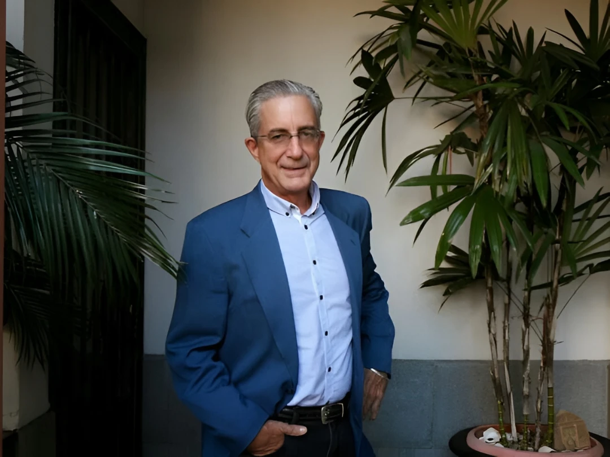

Past President of the Board of Directors
Steven Lill Coit
American citizen originally from Chicago, living in Costa Rica for over 30 years. Founded the Corcovado Foundation in memory of his friend Lon Willing Ramsey Junior, a passionate environmentalist.